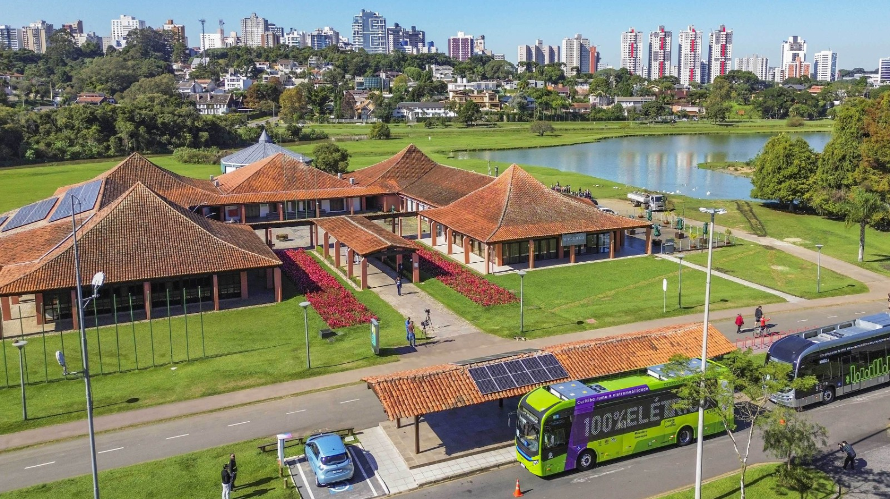

II Seminário para profissionais de Alcoólicos Anônimos
Evento voltado a profissionais de áreas correlatas, estudantes e ao público interessado em geral, com o objetivo de promover a troca de conhecimentos e experiências sobre o tema do alcoolismo.
Fazer inscrição
📅 Data e Horário
11 de Setembro de 2025
Das 13:30h às 18h
📍 Local
Salão de Atos do Parque Barigui
Curitiba - PR
